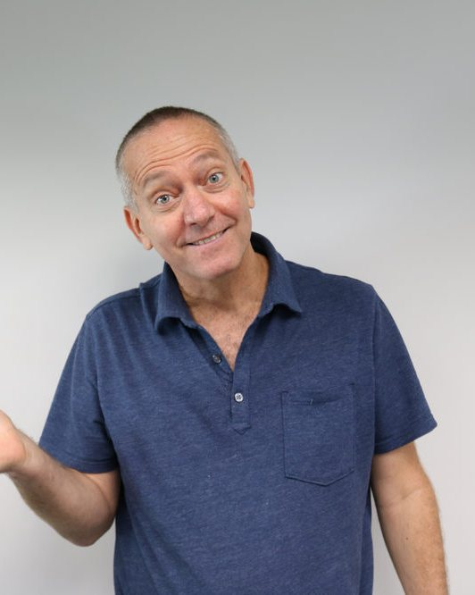

Barak Yahalom, DVM
Chief Executive Officer and Chief Scientific Officer
Barak brings more than 20 years of scientific and veterinary experience in biotechnology and preclinical research. Before co-founding Alpha in 2020, he directed in vivo pharmacology at several biotech companies and held progressively senior roles at Boston Children's Hospital and Biomere.
He works with clients to move translational medicine forward, applying deep expertise in disease models. He is especially interested in how emerging science can produce breakthrough therapeutics and medical devices.
Education
- DVM, Koret School of Veterinary Medicine, Hebrew University of Jerusalem
- BS, Animal Science, Hebrew University of Jerusalem
Before Alpha
- Director of in vivo pharmacology, biotech
- Boston Children's Hospital
- Biomere
Affiliations
- Sideromics Scientific Advisory Board